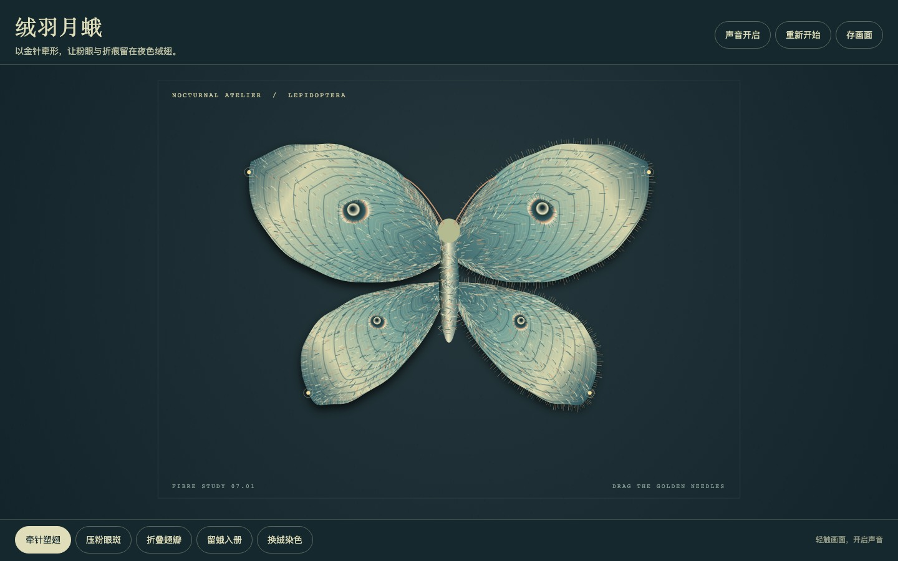
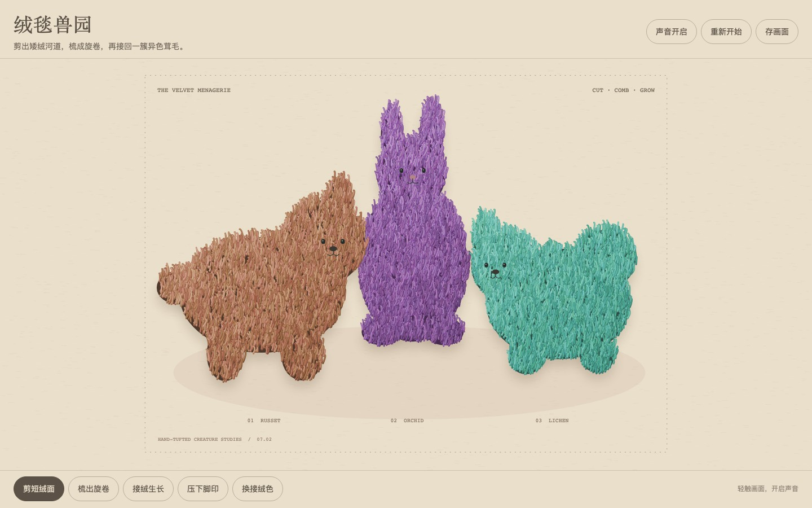
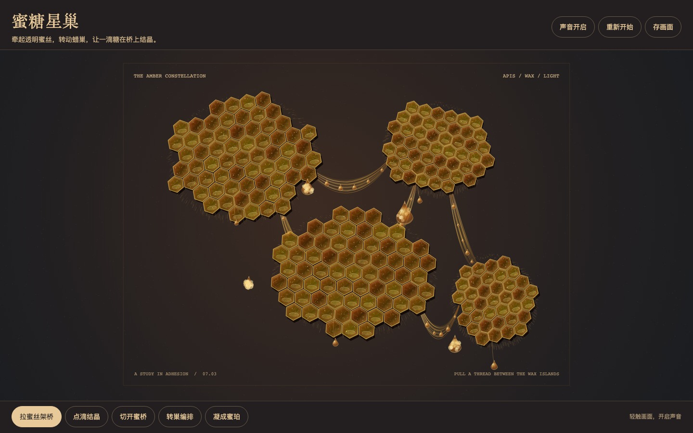
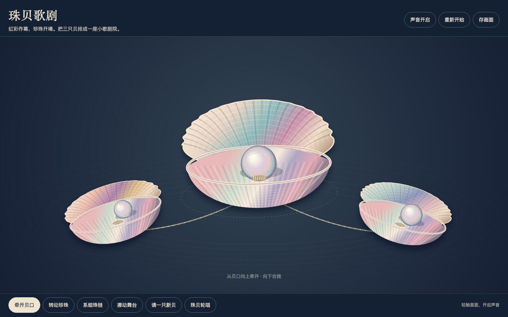
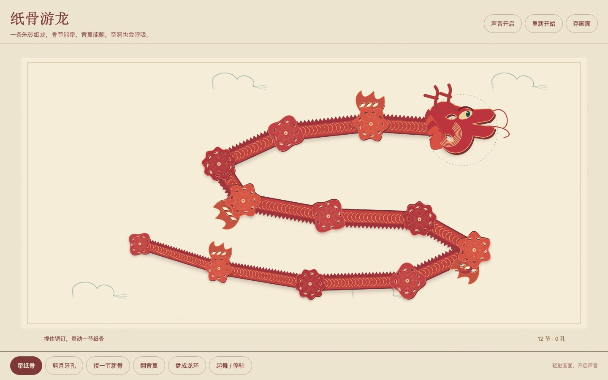
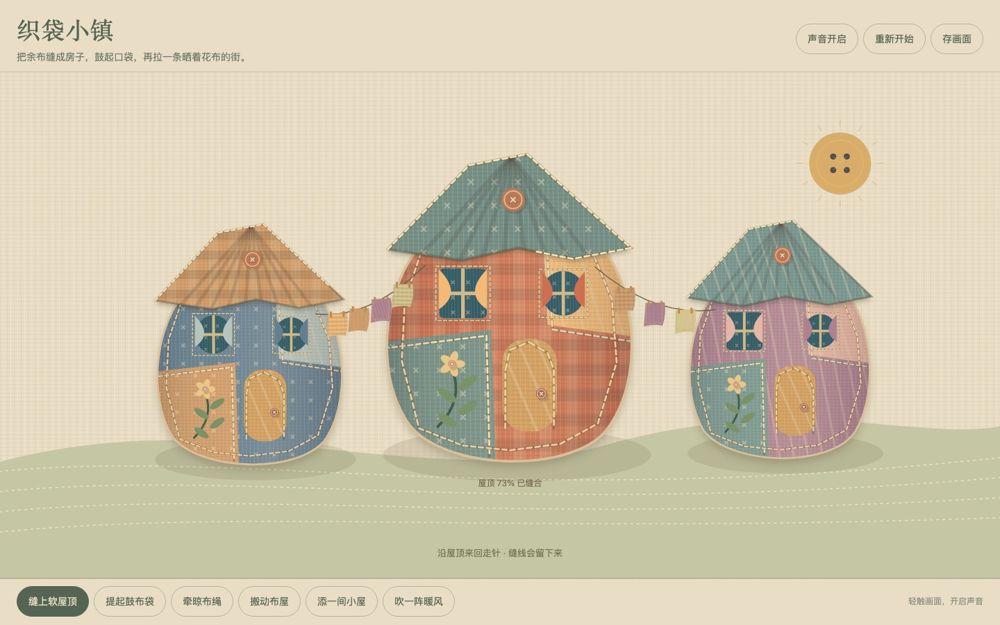
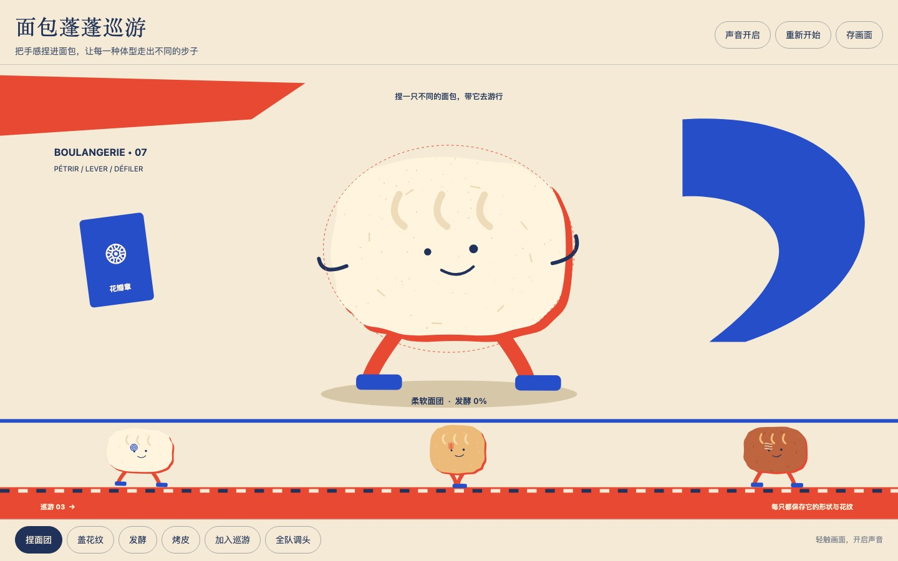
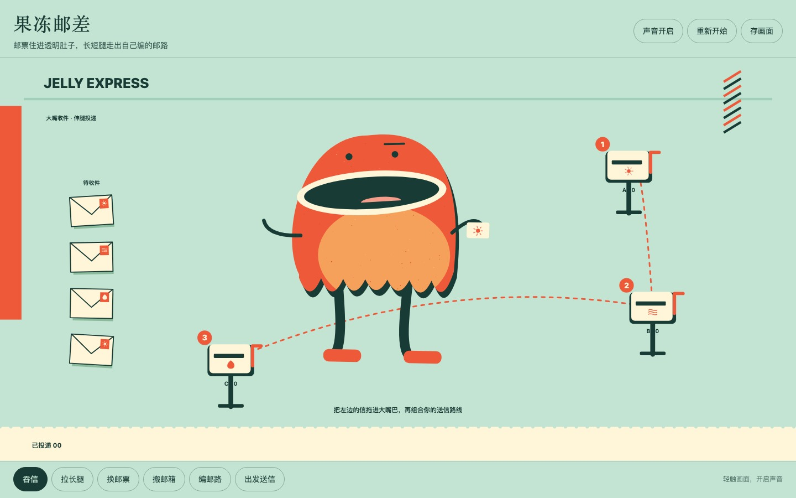
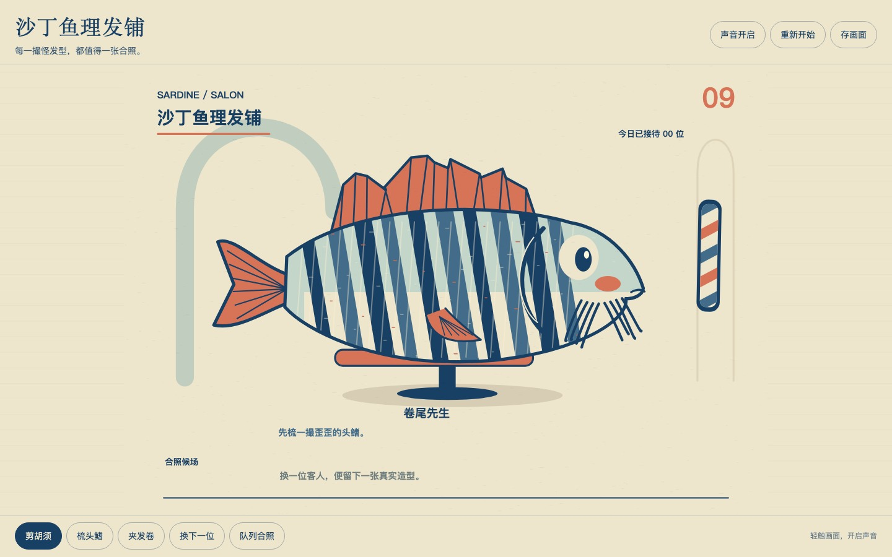
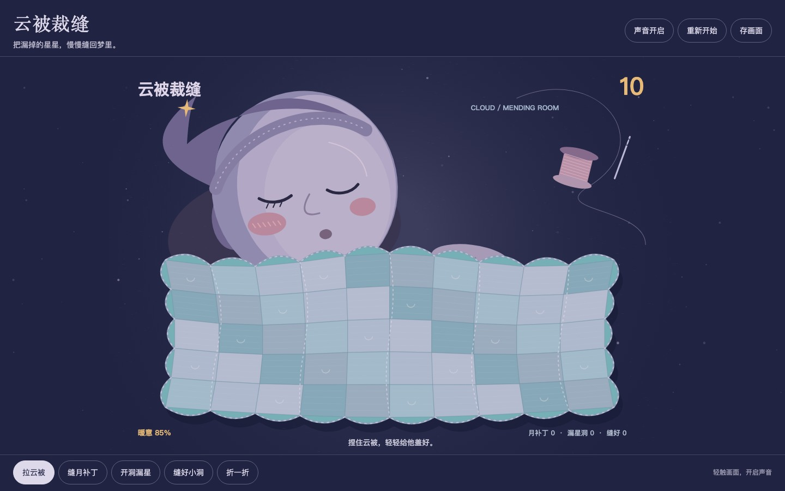

10件可触碰的纤维与奇想。桌面与手机触控仿真、合成声音数据、离线ZIP均已实测。每件可组合多种机制；未进行实体手机测试或人工听音。

牵针塑出四片独立绒翅，压粉眼斑、折翅，再留下多只月蛾。

剪绒、梳卷、接回异色绒，再压下一枚真正凹下的脚印。

拉起透明蜜丝架桥，在桥边点滴结晶，切开后再旋转整块蜂巢。

把虹彩贝口牵开、转珍珠，再用细链连接可移动的贝壳歌剧台。

牵铜钉重排厚纸龙骨，剪月牙孔、接新骨、翻背翼，最后盘成可起舞的龙环。

给拼布袋房屋缝屋顶、提起鼓肚，移动布屋，再用晾衣绳把花布街道连起来。

把手感捏进面包，让每一种体型走出不同的步子

邮票住进透明肚子，长短腿走出自己编的邮路

每一撮怪发型，都值得一张合照。

把漏掉的星星，慢慢缝回梦里。